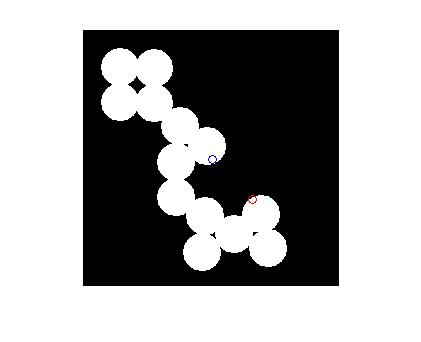
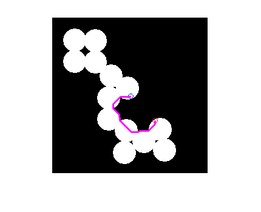
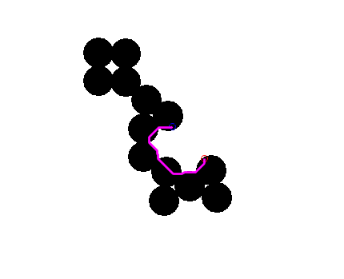

Contents
function demoImGeodesicPath(varargin)
%DEMOIMGEODESICPATH Demo for function imGeodesicPath % % output = demoImGeodesicPath(input) % % Example % demoImGeodesicPath % % See also % % % ------ % Author: David Legland % e-mail: david.legland@grignon.inra.fr % Created: 2011-02-22, using Matlab 7.9.0.529 (R2009b) % Copyright 2011 INRA - Cepia Software Platform.
Initializations
% read circle image, and create 2 markers img = imread('circles.png'); imshow(img); hold on; % create source markers p1 = [130 130]; % (x1,y1) % create destination markers p2 = [170 170]; % (x2,y2) % Display markers on image plot(p1(1), p1(2), 'bo'); plot(p2(1), p2(2), 'ro');
Compute geodesic path between markers
% Compute and display the path as a polyline path = imGeodesicPath(img, p1, p2); % display the path on the image plot(path(:,1), path(:,2), 'color', 'm', 'linewidth', 2);
Display inverted
% new figure figure; imshow(~img); hold on; % Display markers on image plot(p1(1), p1(2), 'bo'); plot(p2(1), p2(2), 'ro'); % Compute and display the path as a polyline path = imGeodesicPath(img, p1, p2); % display the path on the image plot(path(:,1), path(:,2), 'color', 'm', 'linewidth', 2);